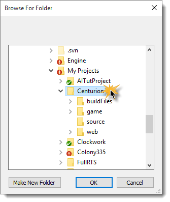

Editing A Keymap |
First, click on the File menu and then select Open:
Next, browse to the top level folder for your game project:
Click OK. Your project's current key map will be loaded. If you have not used this tool before, the key map will be removed from it's default location in game/scripts/gui/optionsDlg.cs and placed in a new game/scripts/gui/keyMap.cs file. An execute statement will be added to optionsDlg.cs to execute the new file before processing the rest of optionsDlg.cs.
To edit entries, simply edit the text in place.
To remove entries, select the row and hit the Delete key.
To add entries, scroll to the bottom of the list and edit the empty entry. Your new text will be added.
When you are done editing, click the File menu and select Save: